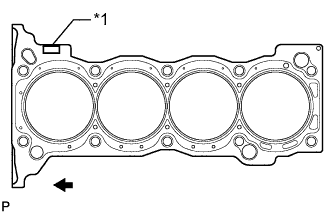
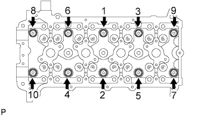
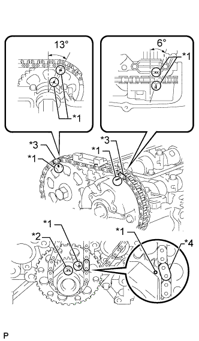
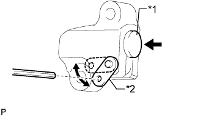
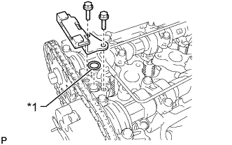
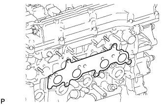

ПРОКЛАДКА ГОЛОВКИ БЛОКА ЦИЛИНДРОВ > УСТАНОВКА |
| 1. УСТАНОВИТЕ ПРОКЛАДКУ ГОЛОВКИ БЛОКА ЦИЛИНДРОВ |
|  |
Установите новую прокладку головки блока цилиндров на блок цилиндров таким образом, чтобы штамп Lot No. (№ партии) был сверху.
| *1 | Номер партии |
 | Передняя сторона |
| 2. УСТАНОВИТЕ ГОЛОВКУ БЛОКА ЦИЛИНДРОВ В СБОРЕ |
Установите головку блока цилиндров на блок цилиндров.
Поместите под болты головки блока цилиндров плоские шайбы.
Нанесите тонкий слой моторного масла на резьбу и под головки болтов головки блока цилиндров.
|  |
Шаг 1:
В несколько этапов вверните и равномерно затяните 10 болтов головки блока цилиндров с плоскими шайбами. Последовательность затяжки показана на рисунке.
Отметьте краской переднюю сторону головки каждого болта крепления головки блока цилиндров.
Шаг 2:
Затяните болты головки блока цилиндров на 90° в той же последовательности, что и на шаге 1.
Шаг 3:
Затяните болты головки блока цилиндров с поворотом на 90° в той же последовательности, что и на шаге 1.
Убедитесь, что метки развернуты на 180° относительно исходного положения.
| 3. УСТАНОВИТЕ КОЛПАК ШТОКА КЛАПАНА |
Нанесите тонкий слой моторного масла на торцы штока клапана.
Установите 16 колпаков штоков клапанов на головку блока цилиндров.
| 4. УСТАНОВИТЕ МЕХАНИЗМ РЕГУЛИРОВКИ ЗАЗОРА В ПРИВОДЕ КЛАПАНА В СБОРЕ |
Перед установкой каждого механизма регулировки зазора в приводе клапана обязательно проверяйте его (Нажмите здесь).
Установите 16 механизмов регулировки зазора в приводе клапана на головку блока цилиндров.
| 5. УСТАНОВИТЕ РЫЧАГ ПРИВОДА КЛАПАНА № 1 В СБОРЕ |
 |
Нанесите слой чистого моторного масла на выступы механизма регулировки зазора в приводе клапана и поверхности колпака штока клапана.
Установите 16 рычагов приводов клапанов, как показано на рисунке.
| *1 | Колпак штока клапана |
| *2 | Рычаг привода клапана |
| *3 | Механизм регулировки зазора в приводе клапана |
| *a | ПРАВИЛЬНО |
| *b | НЕПРАВИЛЬНО |
| 6. УСТАНОВИТЕ РАСПРЕДВАЛ |
 |
Смажьте кулачки распредвала и шейки головки блока цилиндров чистым моторным маслом.
Установите распредвал и распредвал № 2, как показано на рисунке.
| 7. УСТАНОВИТЕ КРЫШКУ ПОДШИПНИКА РАСПРЕДВАЛА |
 |
Временно установите крышку подшипника распредвала № 1.
Определите правильное положение каждой крышки подшипника распредвала № 2 и установите их.
 |
Установите новое кольцевое уплотнение на крышку подшипника распредвала № 1.
| *1 | Кольцевое уплотнение |
Временно закрепите маслоподводящую трубку.
 |
Вверните 21 болт и затяните их в порядке, показанном на рисунке.
| 8. УСТАНОВИТЕ УСПОКОИТЕЛЬ ЦЕПИ № 1 |
 |
Закрепите успокоитель цепи болтом и гайкой.
| 9. УСТАНОВИТЕ ЦЕПЬ В СБОРЕ |
|  |
Установите цепь на звездочку и зубчатое колесо, совместив пластины с метками с установочными метками на звездочке и зубчатом колесе.
| *1 | Установочная метка |
| *2 | Ключ |
| *3 | Пластина с меткой (оранжевая) |
| *4 | Пластина с меткой (желтая) |
 |
Закрепите цепь ведущей звездочки цепи ГРМ на коленчатом валу с помощью веревки. Привяжите веревку рядом со звездочкой.
| 10. УСТАНОВИТЕ БАШМАК НАТЯЖИТЕЛЯ ЦЕПИ |
Установите башмак натяжителя и закрепите его болтом.
| 11. УСТАНОВИТЕ НАТЯЖИТЕЛЬ ЦЕПИ № 1 В СБОРЕ |
|  |
Отведите стопорную пластину вверх, чтобы освободить фиксатор, и глубоко вдавите плунжер в натяжитель.
| *1 | Плунжер |
| *2 | Стопорная пластина |
Опустите стопорную пластину, чтобы ввести фиксатор в зацепление, и вставьте в отверстие стопорной пластины шестигранный гаечный ключ.
Установите новую прокладку и натяжитель цепи, закрепив их болтом и гайкой.
| 12. УСТАНОВИТЕ НАПРАВЛЯЮЩУЮ ЦЕПНОГО ПРИВОДА ГАЗОРАСПРЕДЕЛИТЕЛЬНОГО МЕХАНИЗМА |
|  |
Установите новое кольцевое уплотнение на крышку подшипника распредвала.
| *1 | Кольцевое уплотнение |
Установите направляющую цепного привода и закрепите ее 2 болтами.
| 13. УСТАНОВИТЕ КРЫШКУ ЦЕПНОГО ПРИВОДА ГАЗОРАСПРЕДЕЛИТЕЛЬНОГО МЕХАНИЗМА В СБОРЕ |
Установите крышку цепного привода газораспределительного механизма (Нажмите здесь).
| 14. УСТАНОВИТЕ ВЫПУКСНОЙ КОЛЛЕКТОР |
|  |
Установите новую прокладку.
 |
Установите выпускной коллектор и закрепите его 8 новыми гайками в последовательности, показанной на рисунке.
| 15. УСТАНОВИТЕ КЛАПАН ПЕРЕКЛЮЧЕНИЯ ПОДАЧИ ВОЗДУХА В СБОРЕ |
Установите теплозащитный экран выпускного коллектора № 1 на место.
Установите клапан переключения подачи воздуха и закрепите его 2 новыми гайками.
Подсоедините разъем.
| 16. УСТАНОВИТЕ ВПУСКНОЙ ПАТРУБОК № 4 |
 |
Установите впускной трубопровод № 4 с 2 новыми прокладками и закрепите его 4 новыми гайками в порядке, показанном на рисунке. Снова затяните гайки, обозначенные 1-3, до заданного крутящего момента.
Убедитесь, что гайки затянуты с требуемым крутящим моментом.
| 17. УСТАНОВИТЕ ТЕПЛОЗАЩИТНЫЙ ЭКРАН ВЫПУСКНОГО КОЛЛЕКТОРА № 1 |
Установите теплозащитный экран коллектора № 1 и закрепите его 5 болтами.
| 18. УСТАНОВИТЕ ДВИГАТЕЛЬ В СБОРЕ |
Установите двигатель в сборе (Нажмите здесь).